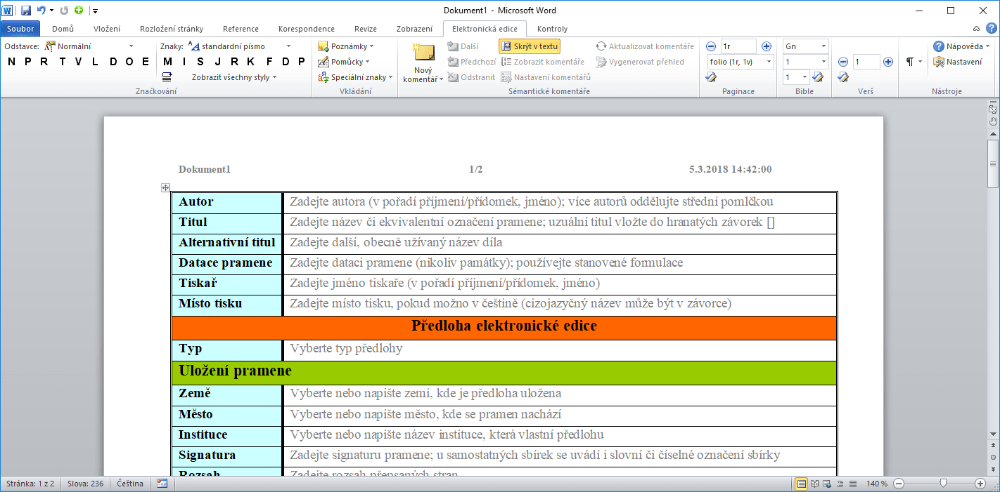

Nástroje
Na těchto stránkách najdete nástroje určené pro badatele. Obvykle jsou k dispozici zdarma, a to včetně zdrojových kódů.
Vznik nástrojů byl podpořen projekty Ministerstva kultury ČR č. DF12P01OVV028 „Informační technologie ve službách jazykového kulturního bohatství (IT JAKUB)“ a Ministerstva školství, mládeže a tělovýchovy č. LM2015081 „Výzkumná infrastruktura pro diachronní bohemistiku“ (akronym RIDICS) v rámci Projektu velkých infrastruktur pro VaVaI.
eEdice
Nástroj eEdice je software, který slouží k označování relevantních částí textů psaných historickou češtinou a k vytváření sémantické anotace pro potřeby automatického zpracování dalšími nástroji, zejména při převodu do formátu XML podle standardu TEI P5 a do formátu vertikály pro korpusový manažer.
Tento nástroj se skládá z doplňku textového editoru Microsoft Office Word 2010 a šablony (eEdice.dotx). Doplněk a šablona jsou distribuovány jako instalační balíček (eEdice.msi). Aktuální verze instalačního balíčku je k dispozici ke stažení na webu . Instalační balíček ke svému spuštění nevyžaduje administrátorská práva, což zjednodušuje distribuci na pracovištích s centralizovanou správou IT.
Transcriptorium
Nástroj pro poloautomatickou transkripci, Transcriptorium, slouží k asistovanému převodu výrazů z transliterované podoby do transkribované.
Kolační pravítko
Kolační pravítko umožňuje graficky ohraničit výsek textu na monitoru. Tento nástroj slouží pro snadné čtení/sledování textů, zejména digitálních obrázků rukopisných, ale i tištěných pramenů. Program umožňuje definovat a uložit několik pravítek (pro různé předlohy), nastavit jejich barvu a průhlednost a také způsob zobrazení (jako klasické pravítko nebo ve formě výřezu s nastavitelnou výškou). Velikost vnitřního výřezu lze upravovat podle potřeby. Pravítko lze umístit jak vertikálně, tak horizontálně, např. pro čtení orientálních textů. Pravítko rovněž obsahuje metrickou stupnici, a to jak na vnějším okraji, tak ve výřezu, takže může sloužit k získání orientačních údajů o rozměrech zobrazeného artefaktu (pramene, písma, grafiky ap.). Pro každou instanci pravítka lze nastavit výchozí pozici, takže se je možné pomocí kláves rychle přesunout na začátek následující stránky. Pravítko lze rovněž uzamknout, takže s ním lze posunovat pouze jedním směrem (vertikálně), čímž se zabrání nechtěnému přesunutí pravítka myší mimo sledovaný rámec.
Speciální znaky
Tento nástroj slouží ke snazšímu výběru nestandardních znaků ze znakové sady Unicode, a to seskupením souvisejících znaků (např. pro řečtinu, azbuku ap.) na jednu plochu. Repertoár znaků a rozčlenění do skupin lze definovat v souboru XML.
Dále tento editor umožňuje „složení“ neobvyklého znaku kombinací základního znaku s diakritickými znaménky z oblasti 0300–036F. Repertoár diakritických znamének je opět konfigurovatelný pomocí souboru XML. Pořadí jednotlivých diakritik lze po sestavení znaku měnit jejich přesouváním v pravé části dialogového okna.
Analýza tokenů
Nástroj využívá tabulkový kalkulátor Microsoft Excel a jeho doplňky PowerPivot a Power Query. Na vstupu jsou jednak metadata o textových pramenech, zejména období jejich vzniku, a dále informace o jednotlivých tokenech a jejich výskytu v konkrétních pramenech. Tato vstupní data, která mají formát CSV souborů, využívá doplněk PowerPivot, který umožňuje zpracovat v relativně krátkém čase velké množství dat (analyzovaný materiál měl přibližně 9 milionů tokenů). Doplněk Power Query se využívá ke generování tvarů slov na základě zadaných koncovek a kmenů. S tímto nástrojem lze analyzovat velké objemy dat, navíc není nutno mít přístup k internetu a korpusovému manažeru, které obvyklé slouží k podobné analýze. Doplněk je také unikátní tím, že zpracovává údaje o více tvarech, popř. koncovkách určitého vzoru najednou. Další předností je možnost vytvářet kontingenční tabulky a přehledy ad hoc podle potřeb a zaměření uživatele. Navržená architektura umožňuje měnit zdrojová data (z aktualizovaného nebo ze zcela odlišného korpusu textů), takže je tento nástroj obecně použitelný pro analýzu zastoupení tokenů v libovolných korpusech.